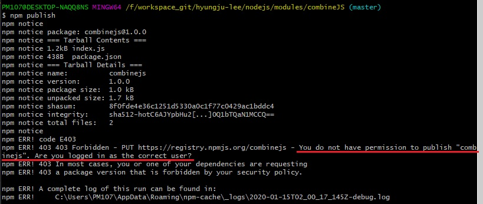

사용자 정의 모듈, NPM에 배포하기
- 사용자 정의 모듈, NPM에 배포하기
-
제작한 combineJS 모듈을 어디서나 사용할 수 있도록 NPM에 공개하여 배포할 수 있습니다.
모듈을 배포하기 전 [modules] 디렉터리 안에 [combineJS] 디렉터리를 생성합니다.
combineJs.js 파일의 이름을 index.js로 바꾼 후 새로 생성한 [combineJS] 디렉터리로 옮깁니다.
파일 이름을 index.js로 변경한 이유는 다음처럼 모듈을 호출할 때 파일 확장자를 생략하고 디렉터리 이름만으로 불러올 수 있게 하려는 것입니다.
이렇게 하면 디렉터리 안에 있는 index.js 파일을 찾아 실행합니다.
다음 단계로 Git Bash에서 [modules/combineJS] 디렉터리로 이동(Change Directory)합니다.
그리고 NPM 명령어인 npm init를 입력하여 실행합니다.
초기화(init) 명령어는 사용자에게 질문하여 대답을 입력받는 형식으로 package.json 파일을 생성합니다.
package.json은 배포(publish)할 때 반드시 필요한 파일입니다.
package.json 파일을 직접 생성할 수도 있지만, 처음 사용할 때는 초기화 명령어로 생성하는 것이 더 편리합니다.
package.json 파일을 열면, 질문에 답변한 내용이 문서에 포함되어 있습니다.
(문서 내용 중 필요 없는 부분은 삭제하여 정리할 수 있습니다.)
위에 작성한 combineJS 모듈은 minify 모듈에 의존(Dependencies)합니다.
그러므로 모듈을 배포할 때 이를 package.json에 명시해야 합니다.
Git Bash에서 npm install --save-dev minify 명령어를 입력하여 실행하면 [combineJS] 디렉터리 안에 [node_modules] 디렉터리가 추가됩니다.
그 안에는 [minify] 모듈 디렉터리가 들어 있습니다.
그리고 자동으로 package.json 파일도 업데이트되어 의존 모듈임을 표시합니다.
package.json 파일을 생성한 후에는 NPM에 배포할 사용자 계정을 추가해야 합니다.
npm adduser 명령어를 입력하여 실행하면, 질문 형식으로 사용자 이름(Username), 비밀번호(Password), 메일(Email) 정보를 물어봅니다.
질문에 대답하면 사용자 계정이 등록됩니다.
이제 NPM에 배포하는 npm publish 명령어를 실행합니다.
오류 메시지가 출력됩니다.
어떤 문제가 있는 걸까요? 오류 메시지를 확인해보니 '등록할 모듈 패키지 이름은 반드시 소문자로만 작성해야 한다(forbidden New Package must have all-lowercase names)고 합니다.

그런데 이것도 책과 다르게 나오네.. 버전업이 되어서 그런가..흠, 아 그런게 아니라 등록한 메일로온 verify를 안해서 그런거였음.
여튼 모듈 패키지 이름에 대문자가 있어 발생한 오류입니다.
package.json 파일에서 name 값의 대문자 JS를 소문자 js로 수정하여 저장합니다.
다시 Git Bash에서 npm publish 명령어를 실행하면 오류 업시 정상적으로 모듈이 NPM에 등록됩니다.
배포된 모듈 패키지는 NPM에서 모듈 이름으로 검색하거나 https://npm.com/package/{모듈이름}으로 접속해서 확인할 수 있습니다.
(배포한 후 즉시 확인하면 검색이 되지 않을 수 있습니다. 이때는 잠시 후에 다시 시도합니다.)